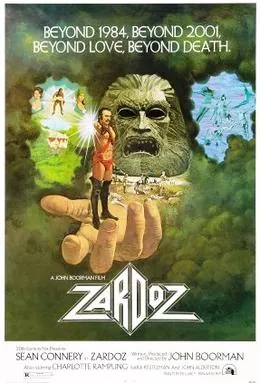

The genetics
Genetics appears as a late twist rather than as the main subject. A genetic analysis of Zed reveals that he is the end product of a long eugenic breeding programme secretly devised by Arthur Frayn, who used his control over the Exterminators to breed a superior man capable of entering the Vortex and breaking the Eternals' stagnation. Frayn also guided Zed's education, leading him to read The Wonderful Wizard of Oz, the source of the name Zardoz. Frayn is a manipulator rather than a laboratory scientist, and his creation turns out more thoughtful and humane than the Eternals expect. The film touches on related ideas: the Eternals no longer need to reproduce and, when they die by accident, are reborn into identical, synthetically produced bodies. The breeding programme is closer to selective animal breeding than to modern genetics, and the film treats it allegorically, as part of a fable about immortality, power and the value of mortality.
How genetics is portrayed
- Overall portrayal of genetics
- mixed The genetic copying of bodies sustains an immortality the film presents as hollow and decadent, never as a positive happiness, while the eugenic programme is the hidden plan that liberates humanity, run by a manipulator; the film weighs both within an allegory about the value of death.
- Outcome of the genetic intervention
- mixed Frayn's breeding produces Zed, who ends the Eternals' stagnation and restores mortality and reproduction, but through manipulation and a massacre; the Tabernacle's body-copying immortality has produced a sterile, corrupt society.
- Arthur Frayn
- ambivalent Aim: benevolent, ideological (mixed). Frayn secretly runs a multi-generation eugenic breeding programme through the Exterminators to produce a 'superman' who will break the Eternals' stagnation; the aim is saving humanity, but he pursues it through a murderous fake god, and the film exposes him as a Wizard-of-Oz manipulator without simply condemning him.
- The Tabernacle
- villain Aim: power (negative). The Vortex's artificial intelligence (affiliation: the Eternals' own machine) regrows dead Eternals in identical synthetic bodies to keep the elite immortal and in order; the film presents this as the source of their boredom, impotence and corruption, and Zed destroys it.
The story
In 2293, humanity is divided between the immortal Eternals, who lead a luxurious but aimless life inside the Vortex, a community guarded by an artificial intelligence called the Tabernacle, and the mortal Brutals, who farm an irradiated wasteland to feed them. A flying stone head, Zardoz, arms a caste of Brutal Exterminators to keep the others in line. One of them, Zed, stows away aboard Zardoz and reaches the Vortex, where he is held captive and studied. He discovers that the Eternals, unable to die, have grown bored, impotent and corrupt, and that Zardoz is a fraud run by the Eternal Arthur Frayn. Helped by May and the rebel Friend, Zed absorbs the Eternals' knowledge and shuts down the Tabernacle, letting the Exterminators in to kill the Eternals, who welcome death. Zed and Consuella then have a son and grow old together.